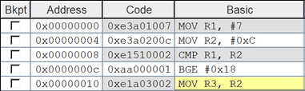
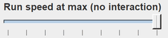
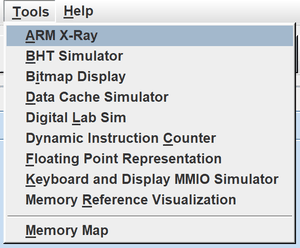
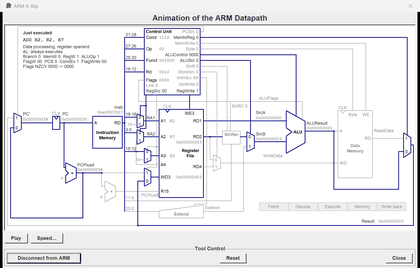

ARES Features
What ARES does, in short:
- A window you work with the mouse, with an editor built in. These three buttons of the toolbar run the program, step one instruction, and step one instruction back.
- Integrated editor, featuring multiple file-editing tabs, syntax colouring, find and replace, and line numbers. Errors from the assembler point to their lines.
- Breakpoints: a click on the check box beside an instruction sets or clears one

- Registers you edit in place, like the cells of a spreadsheet; memory shown in hexadecimal, decimal or ASCII
- Values shown in hexadecimal or in decimal
- Floating point registers S0 to S31 and D0 to D31, in the Coproc 10 and Coproc 11 tabs, with FPSCR
- A run speed you choose, up to full speed

- Backstep: one instruction undone at a time
- System calls (
SVC #N) for text and number input and output, files, dialogs, random numbers and time - The DE1-SoC computer's JTAG UART, and with the Digital Lab Sim its red LEDs, slide switches, push buttons and seven-segment displays
- "Tools" for watching a program run, each in its own window, from the Tools menu. The ARM X-Ray animates each instruction on a single-cycle ARM datapath.


- A built-in Help that lists every instruction, pseudo-instruction and system call and explains the directives, and example programs under File > Open Example